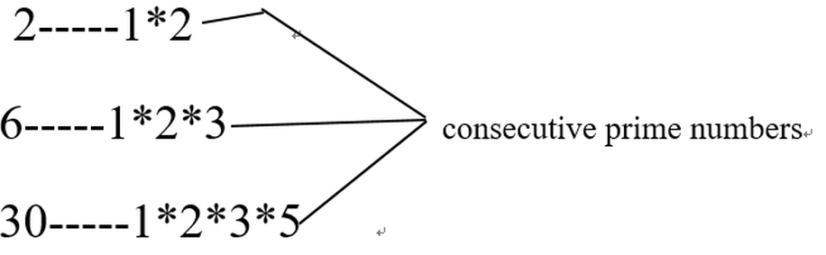

A prime number is a natural number greater than 1 that has no positive divisors other than 1 and itself. Numbers that are the product of several consecutive prime numbers starting with 1 are named "primordial".
Let's have a look:
The number "30", which is the title of this section, is the third primordial. Here are some interesting theorems about primordial numbers. Let's learn them:
Experiment 1
We find out that a primordial number +1 and- 1 will give you a value which cannot be divided by any of the numbers on your list of primes used to generate the primordial number.
An example is shown on the right. As you can see, 29 and 31 cannot be divided by 2,3 or 5.
Experiment 2
Apart from this, there is another fact partially related to the above about primordial numbers that we ought to learn and proof.
Let’s take the third primordial 30 as an example. We can divide a primordial by 2 to get 15, and add or subtract it by 2 or 4. Which is 11, 13, 17 and 19, they all can't be divided by 2,3 and 5, which are the prime numbers used to generate the primordial 30.
Still don't believe it? Let’s take the fourth primordial 210 as an example. We can divide a primordial by 2 to get 105, and add or subtract it by 2 or 4. Which is 103, 101, 107 and 109, they all can't be divided by 2,3,5 and 7, which are the prime numbers used to generate the primordial 210.
So now we can see that:
After dividing the primordial by 2 and add or subtract the quotient by 2 or 4. The answers cannot be divided by the primes generated by them.